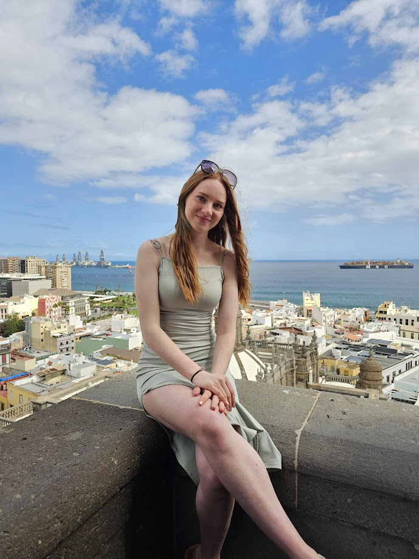

O meni
- Starost: 23 let
- Letnik: UNI, 3. letnik
- Smer študija: Organizacija in management informacijskih sistemov
- Domača fakulteta Fakulteta za organizacijske vede, Univerza v Mariboru
- Fakulteta izmenjave: Universität der Bundeswehr München
Kdo sem?
Sem Pina, študentka informatike z veliko željo po raziskovanju sveta, spoznavanju novih ljudi in izzivih izven cone udobja. Izmenjava v Nemčiji je bila zame neprecenljiva izkušnja, ki mi je razširila obzorja tako osebnostno kot tudi strokovno. Za izmenjavo sem se odločila, saj sem si že od vedno želela živeti v tujini in se tam izobraževati. Nemčija se mi je zdela dobra izbira tudi zaradi jezika, saj sem se že v srednji šoli učila nemščino, ki sem jo sedaj zagotovo tudi nadgradila.